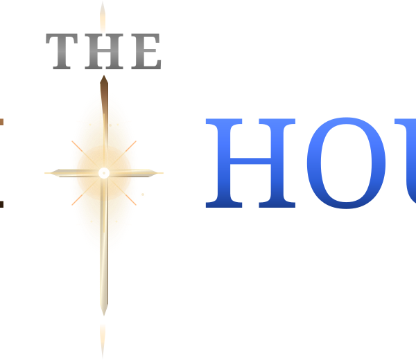

Presented by

A collection of lessons exploring the Gospel of John through Scripture, music, and reflection.
This study guide brings together careful examination of the Gospel of John with contemporary Christian music. Each lesson includes a detailed summary of the passage, a song that connects thematically to the text, and an explanation of how the music illuminates the biblical truth. The songs don't attempt to cover an entire lesson—instead, they're inspired by a moment, theme, or idea that stood out, and may help the lesson linger with you. Whether you're studying individually or as part of a group, we hope these resources help deepen your understanding of John's Gospel and draw you into an encounter with Jesus through both Scripture and song.
We invite you to do what the Gospel of John itself invites: come and see for yourself. Don't take these lessons and songs as the final word. Open the Scriptures. Read the passages. Ask your own questions. The goal has never been to create passive listeners, but to spark a deeper, personal encounter with Christ—to understand who He is, why He came, and what it means to believe in His name.
After all, John told us why he wrote: "These are written that you may believe that Jesus is the Messiah, the Son of God, and that by believing you may have life in his name." (John 20:31)
That's our hope for you too.
A note on how this was made: This website and its music were created with the help of AI tools, and the lessons are drawn from a Bible study among fellow believers seeking to understand Scripture together. This content has been reviewed for accuracy but not by a biblical scholar—despite our best efforts, some errors may remain.
"The Tenth Hour" is a musical project focused on life-changing encounters with God, inspired by the Gospel of John's powerful moments of struggle, grace, doubt, and revelation.
Welcome. "The Tenth Hour" is a musical project focused on the "turning point"—those life-changing moments where a person has a real encounter with God. The name comes from John 1:39, the original "tenth hour" when the first disciples met Jesus and their lives were changed.
This study of the Gospel of John is our main inspiration. The book is filled with these powerful encounters. These lessons, with their themes of "struggle and grace" and "doubt and revelation", are what sparked these songs.
Our goal is to highlight the key points of each lesson by sharing a story, not by preaching. This music uses an "honest, earthy" folk-rock sound to tell a timeless truth through a real, personal story. As you go through this study, we hope this music feels less like a performance and more like a group of friends sharing their experience alongside you.
Our hope is that this music helps you connect with these lessons and makes the truths of the Gospel feel personal.
A note on the production: To bring these lyrical themes to life, the music for The Tenth Hour was produced using AI tools, guided by the creative vision for a roots-rock, folk, and soul sound.
A Johannine Christmas Carol
"The light shines in the darkness..."